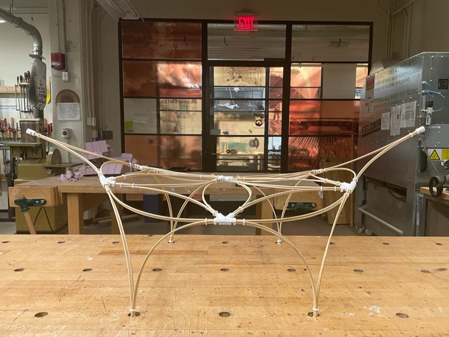

Transformable Modular Bamboo
Active Bending Bamboo for Deployable and Reconfigurable Network structures using 3D Printed Nodal Connections
Project Description
Bamboo's high elasticityallows the material to undergo calibrated deformations without breaking or damage.
When bent, internal tensileequilibrium makes the material more rigid, thusmaking bamboo ideal for creating transformablesystems that can be bent into complex forms.
Despite these advantages, designing with bamboo can be challenging due to its nonstandard and structurally dynamic properties.
Conventional design methods often rely on making physical models to design with bamboo. Designers would measure these physical model to "digitize" the design or construct directly from models.
While digital design technology such as physics engines can be used simulate the behavior of bamboo structures to provide an aproximation, the estimation of the often fail to account for nonstandard parameters associated with bamboo.
The active bending property of bamboo is utilizedin the design of a reconfigurable modular system. The modules are constructed by bundling bamboo at their ends.
Modules can be assembled in differentarrangements on the ground and lifted into placein various configurations. The ends ofthe modules can be joined to each other, anchoredto the ground, or free without any connection.Depending on the arrangement of the modules,the structure can be reconfigured. Since themodules are interconnected, the bending occurs atboth the module scale, and the global structurescale.
Due to the activebending property of bamboo, the bendingtransformations can be undone since there is nopermanent damage incurred from the elasticdeformation.
The prototype was utilized to test the transformable aspect of the modular system by assembling themodules in 2D and lofting the module in place tocreate a 3D structure.
3D Printed Connections (Nodes) are uses as connection between these modules.
Documentation
Configuration 1 View 1
Configuration 1 View 2

Configuration 2 View 1
Configuration 2 View 2
Configuration 3 View 2
Configuration 3 View 2
Assembly Process
Part to whole relationships
Modules
3D Printing Tests
Single Module - Testing with the connections before printing a bunch of them
Removing support from 3D print.
3D Printing Tests
Completed 3D print. I am using the Sindo Printer here. Followed in default instructions from the Archsite. Nothing Fancy
 Checking up on 3D print midway to ensure that there's no errors. Included support just in case.
Checking up on 3D print midway to ensure that there's no errors. Included support just in case.
Previous Work
Pavilion I built a couple months ago !
Next Step
Put sensors on the network system to track the deformation
Scanning Lofted Structure
Using Polycam to scan this. My friend have a paid account so I am using that here.
This kinda failed. I was able to scan the top, but the leg didn't show up
Scanning Flat Structure
Trying this a second time, but this time the structure is not lofted
This kinda works, but also not so useful